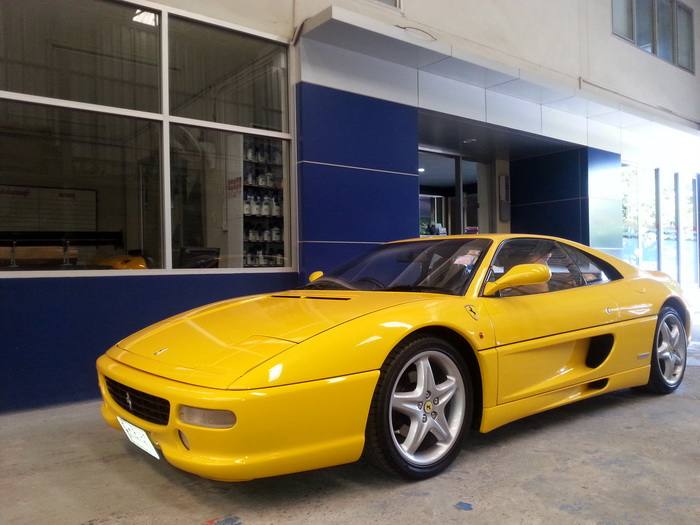
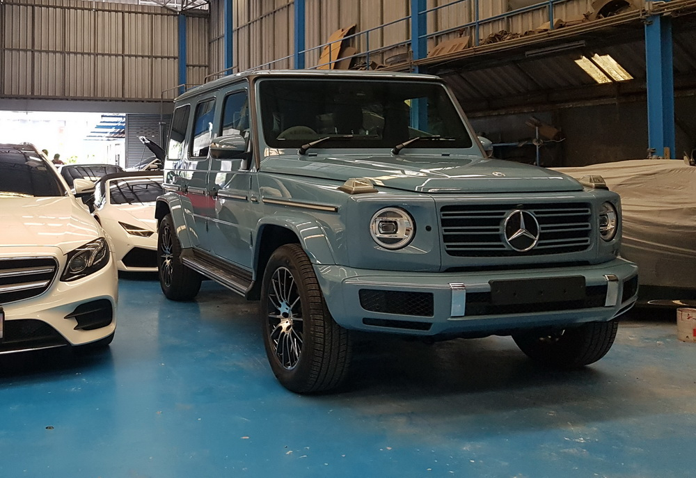
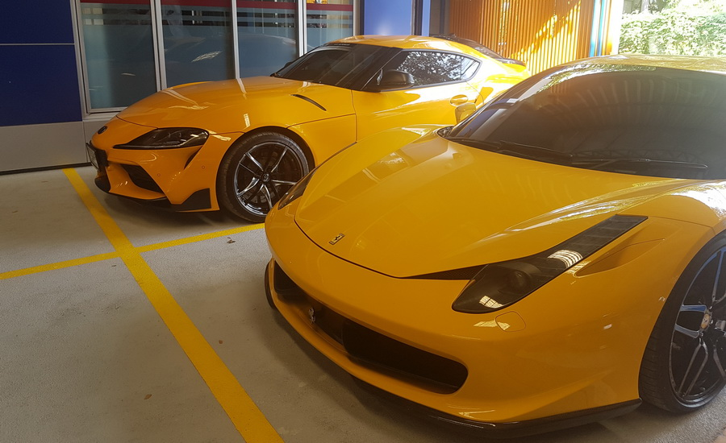
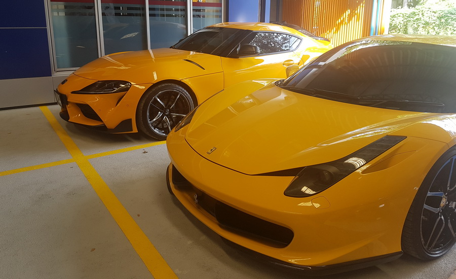
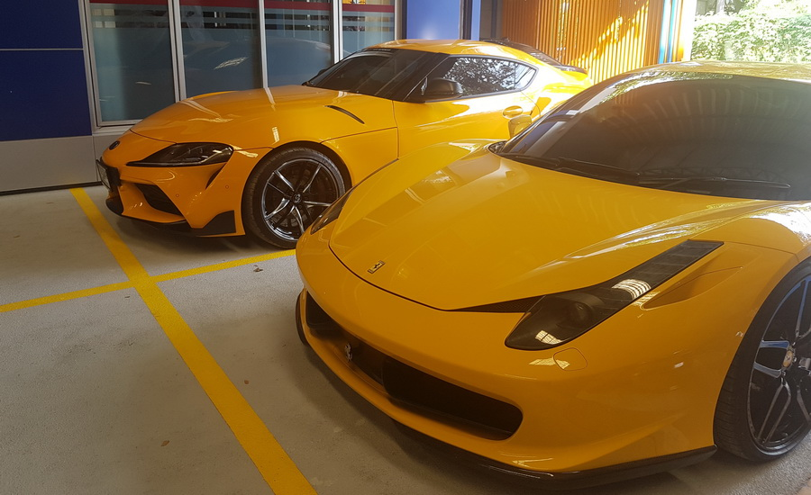
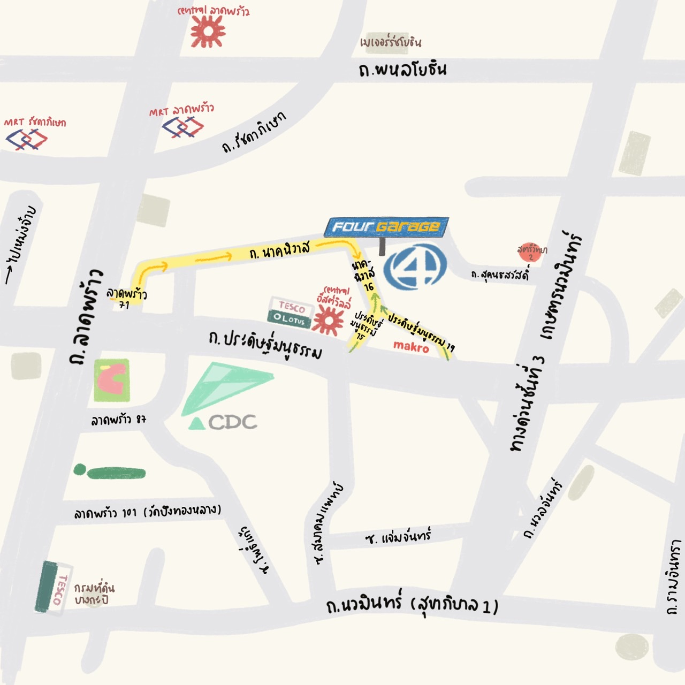
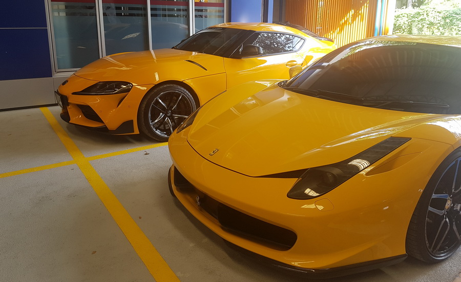
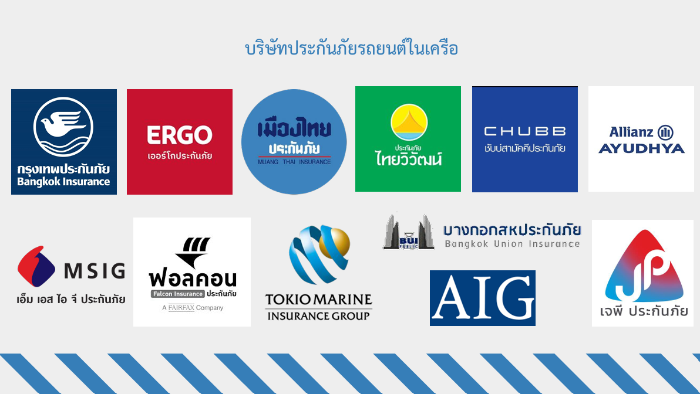

ตัวอย่างผลงาน จากประสบการณ์กว่า 20 ปี


 



23 ซอยนาคนิวาศ 16 แขวงลาดพร้าว เขตลาดพร้าว กทม. 10230

วันจันทร์ - วันเสาร์ 8.30 น. - 17.30 น.
วันอาทิตย์ หยุดทำการ
บริษัท โฟร์การาจ เรซซิ่ง จำกัด
Tel 029561331
ปราณีต รวดเร็ว และตรงต่อเวลา คือบริการของเรา
จากประสบการณ์การบริการมากกว่า 20 ปี ทำให้รู้ถึงความต้องการของลูกค้า
ทางบริษัท โฟร์การาจ เรซซิ่ง จำกัด จึงพัฒนาอย่างต่อเนื่อง เพื่อให้ลูกค้าเกิดความพึงพอใจในการบริการ นับตั้งแต่วันนำรถมาใช้บริการ จนถึงวันรับรถ
ด้วยความเอาใจใส่ ดูแล และควบคุม ทำให้ผลงานและคุณภาพสามารถการันตีได้
บริการแต่งสี พ่นสี เปลี่ยนแปลงสีรถยนต์ เพื่อสีที่กลมกลืนเหมือนเดิม คุณภาพสีชั้นเยี่ยม 2K เครื่องดึงตัวถังที่มีประสิทธิภาพสูง (JIG)
สามารถซ่อมแซมตัวถังหรือช่วงล่าง ให้คืนสู่สภาพเดิม ตามความพอใจของลูกค้า

- บริษัท กรุงเทพประกันภัย
- บริษัท เออร์โก ประกันภัย
- บริษัท เมืองไทยประกันภัย
- บริษัท ประกันภัยไทยวิวัฒน์
- บริษัท เอ็มเอสไอจีประเทศไทย
- บริษัท ฟอลคอนประกันภัย
- บริษัท คุ้มภัยโตเกียวประกันภัย
- บริษัท บางกอกสหประกันภัย
- บริษัท ชับบ์สามัคคีประกันภัย
- บริษัท เอไอจีประกันภัย (นิวแฮมเชอร์)
- บริษัท อลิอันซ์อยุธยา ประกันภัย
- บริษัท เจพีประกันภัย

Facebook: โฟร์ การาจ เรซซิ่ง
Instagram: @fourgarage4444
Email: fourgarage4444@gmail.com